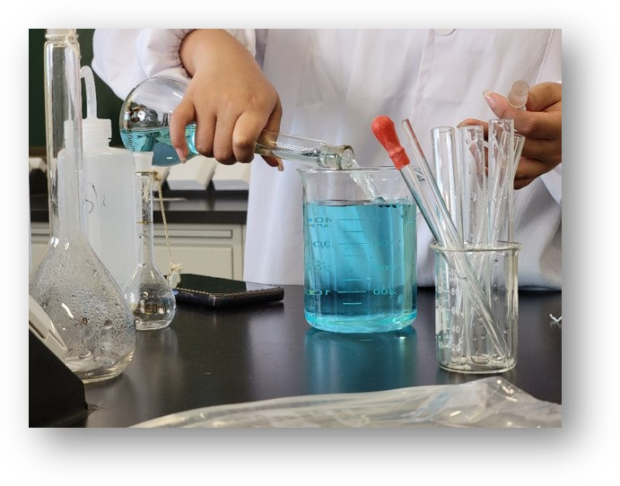
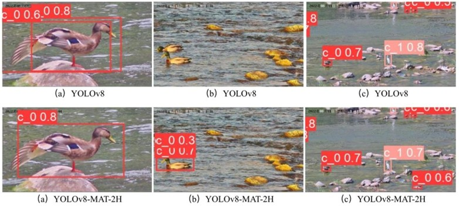
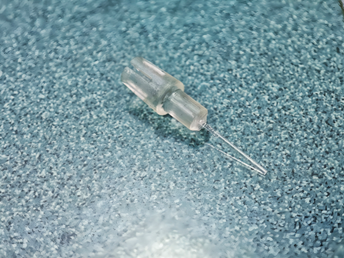
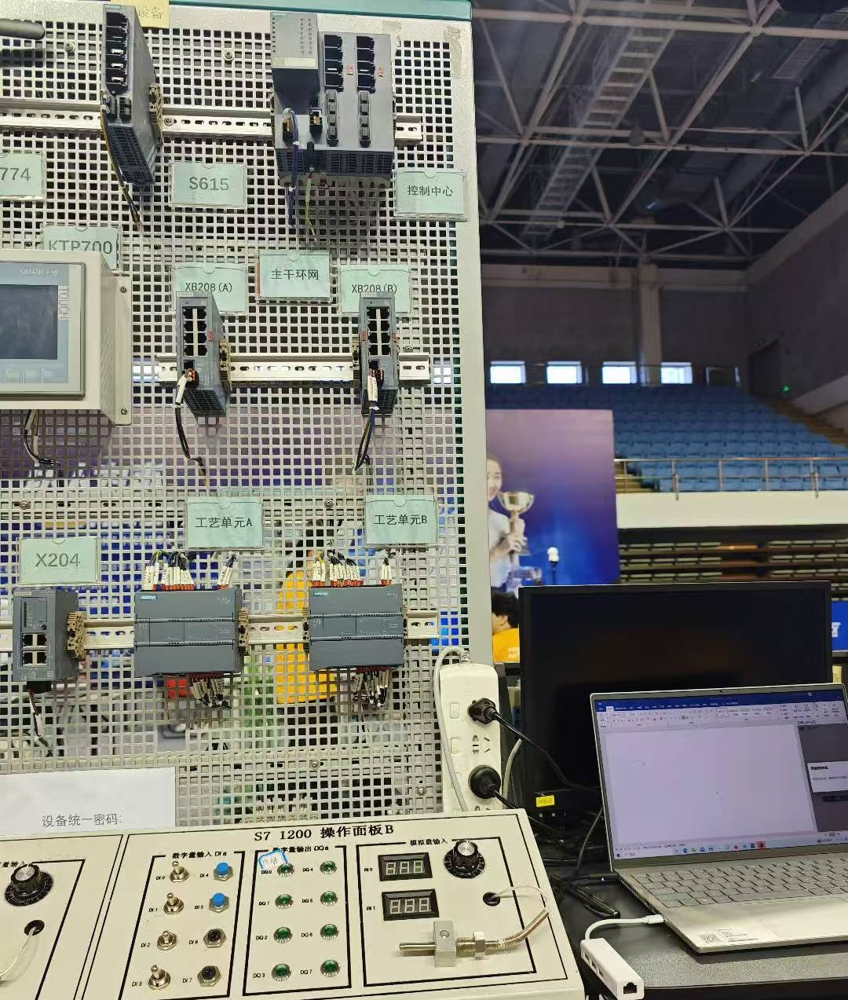
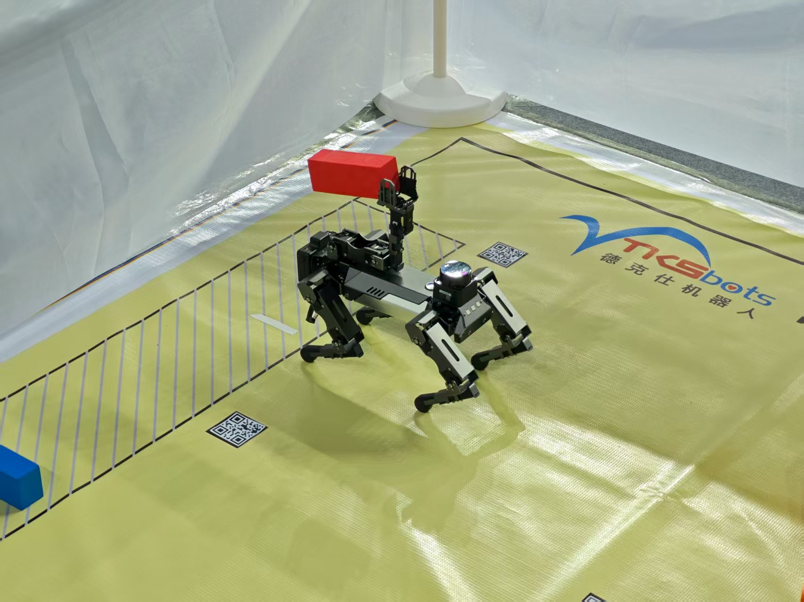
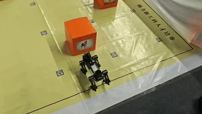
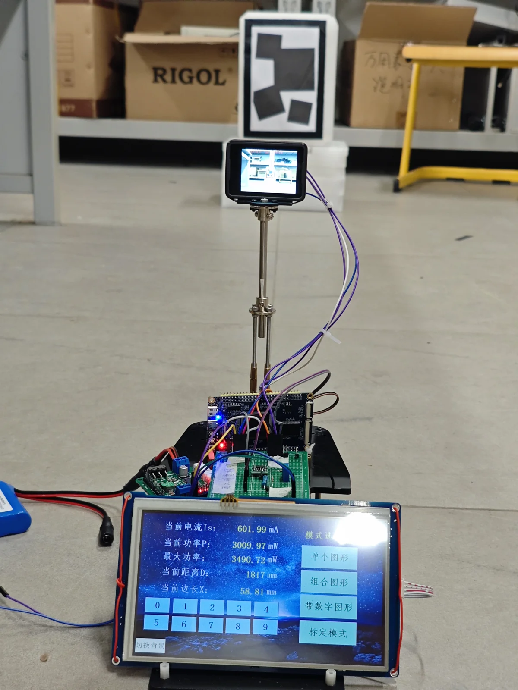
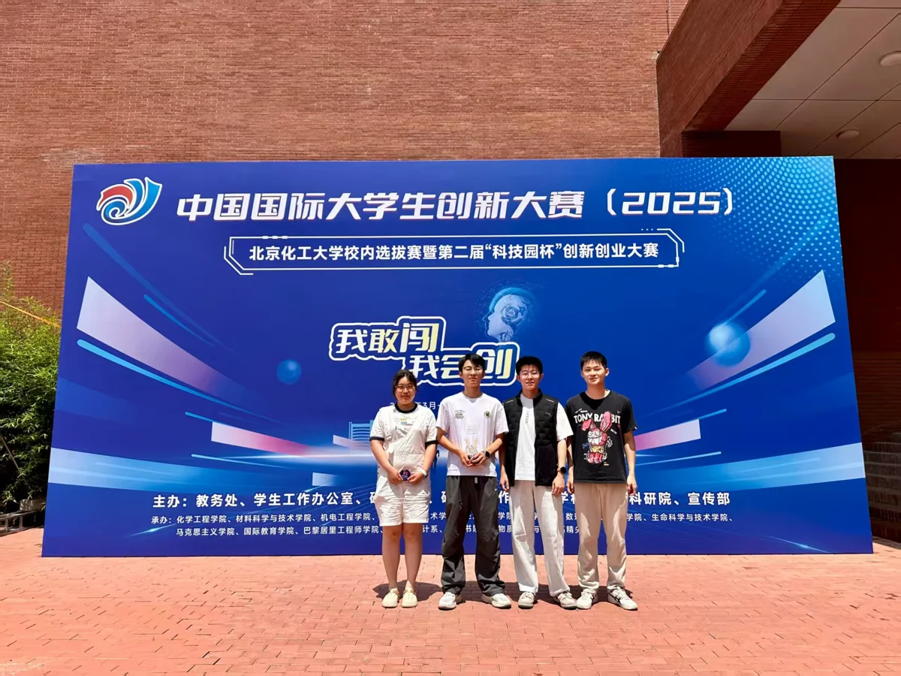
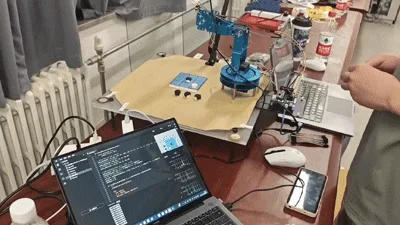
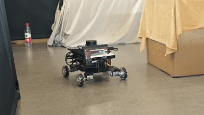

What I Do我能做什么
AI Agents & RAGAI Agent 与 RAG
Tool integration, multi-agent workflows, persistent context, and evaluated retrieval for embedded development. 面向嵌入式开发，构建工具集成、多 Agent 工作流、上下文持久化与检索评估能力。
Vision Systems视觉系统
OpenCV/YOLO solutions for detection, tracking, and measurement on edge devices. 基于OpenCV/YOLO的检测、追踪与测量，适配边缘设备。
Robotics & ROS机器人与ROS
Navigation, manipulation, and perception pipelines for real tasks. 导航、操控与感知流程，面向真实任务。
Industrial Automation工业自动化
Siemens PLC + TIA Portal, robust networks, and on-site commissioning. 西门子PLC与TIA Portal，工业网络与现场调试。
Data & Research数据与研究
Modeling, experimentation, and reproducible analysis for decisions and papers. 建模与实验，数据驱动的决策与论文产出。
- MSc in Electronic Engineering 电子工程系 电子工程硕士（在读） Sep. 2026 - July 2027 (Expected) 2026.09 - 2027.07（预计）
- Bachelor of Engineering in Automation 自动化专业 本科 Sep. 2022 - June 2026 2022.09 - 2026.06
- Average Overall Score:均分: 88.05/100
- Core Courses:核心课程: Signals and Systems (93), Linear Algebra (92), Embedded System Design (A), Digital Image Processing (A), Modern Control Theory (88)信号与系统 (93), 线性代数 (92), 嵌入式系统 (A), 数字图像处理 (A), 现代控制理论 (88)
Development开发
AI Agents & RetrievalAgent 与检索
Tool integration, multi-agent workflows, persistent context, hybrid retrieval, reranking, and retrieval evaluation.工具封装、多 Agent 工作流、上下文持久化、混合检索、重排序与检索评估。
Languages语言能力
Mandarin (native), Cantonese (fluent), English (IELTS 7.0).普通话（母语）、粤语（流利）、英语（雅思 7.0）。
- AI Intern | Beijing Miji Technology Co., Ltd. AI 实习生 | 北京觅机科技有限公司 Mar. 2026 - June 20262026.03 - 2026.06
CodePulse CLI — AI Assistant for Embedded DevelopmentCodePulse CLI 嵌入式开发助手
- Extended CodePulse CLI from OpenCode for embedded engineers, with one main agent coordinating requirements clarification, hardware validation, JSON configuration generation, project generation and compilation, and two subagents dedicated to hardware validation and configuration generation.面向嵌入式工程师，基于 OpenCode 二次开发 CodePulse CLI，由主 Agent 推进需求确认、硬件验证、JSON 配置生成、工程生成及编译流程，两个子 Agent 分别负责硬件验证和配置生成。
- Integrated RAG, an SSOT chip database, code generation and Keil compilation tools, supporting task submission, status polling and project download. Engineers used the assistant to complete multiple projects that were successfully compiled, flashed and run.封装 RAG、SSOT 芯片数据库、代码生成及 Keil 编译工具，支持生成任务提交、状态轮询和工程下载；嵌入式工程师已使用该产品完成多个项目的开发，成功编译、烧录和运行。
- Persisted requirements, hardware configurations and progress in project files across sessions, with user confirmation of key parameters before configuration and project generation.将需求、硬件配置和执行进度持久化到项目文件，支持跨会话开发；生成配置和工程前由用户确认关键参数。
RAG and Structured Chip Knowledge ServicesRAG 与 SSOT 知识服务
- Built a RAG service for chip manuals, peripheral documentation and industry examples, with PDF/Markdown cleaning and heading-based hierarchical chunking. Combined BGE-M3 dense and sparse representations with FAISS, reciprocal rank fusion and BGE-Reranker.面向芯片手册、外设文档和行业案例搭建 RAG 服务，完成 PDF/Markdown 清洗与基于标题的层级分片；使用 BGE-M3 生成稠密与稀疏表示，结合 FAISS 向量检索、稀疏召回、RRF 融合及 BGE-Reranker 重排序。
- Built a PostgreSQL single source of truth (SSOT) for chip pin multiplexing, peripheral capabilities, electrical parameters and memory configurations, supporting chip-parameter queries and pin-function validation for agents.基于 PostgreSQL 建立结构化芯片事实库（SSOT），统一管理引脚复用、外设能力、电气参数和存储配置，为 Agent 的硬件验证提供芯片参数查询与引脚功能校验。
- Designed chip-model and topic-keyword prefiltering with a four-level tag system. On a 21-query offline test set, chip-model filtering and reranking improved Recall@5 from 49.8% to 65.2% and MRR from 0.623 to 0.793; the keyword filtering + rerank pipeline also reached a 95.2% success rate on 21 manually labeled queries. Added topic filtering, fallback chip-model matching and same-series documentation recall.设计“芯片型号 + 主题关键词”两级预过滤与四级标签体系；在包含 21 条查询的离线测试集上，型号关键词过滤与重排序使 Recall@5 从 49.8% 提升至 65.2%、MRR 从 0.623 提升至 0.793；关键词过滤 + Rerank 组合在 21 条人工标注查询中另达到 95.2% 成功率。进一步加入主题过滤、型号降级匹配及同系列文档召回。
- Implemented LLM-as-Judge retrieval evaluation with generated queries and retrieval API calls, scoring relevance, technical value, completeness and accuracy.实现 LLM-as-Judge 检索评估流程，自动生成查询并调用检索 API，按相关性、技术价值、完整性和准确性评分。
- Engineered a FastAPI + PostgreSQL + Gradio management system for corpus maintenance, query testing and result inspection. Supported document ingestion, version activation and deactivation, SSOT import, inactive-version filtering, structured logging, health checks, and backup and recovery.将检索流程工程化为 FastAPI + PostgreSQL + Gradio 管理系统，支持语料维护、查询测试与结果检查，以及文档入库、版本启停、SSOT 导入、停用版本过滤、结构化日志、健康检查和备份恢复。
- Electronic Controls Intern | Shenzhen Jowin Energy Technology Co., Ltd. 电子控制实习生 | 深圳市卓益节能环保设备有限公司 Jul. 2025 – Sep. 20252025.07 – 2025.09
- Designed PCB layout for an Automatic Sewage and Scale Removal Controller using Altium Designer.使用 Altium Designer 设计“自动排污除垢控制器”控制板 PCB。
- Developed initial firmware in C for a 51 MCU to manage timed discharge and descaling based on sensor inputs.基于 51 单片机用 C 开发初版固件，按传感器输入执行定时排污与除垢。
- Contributed to the electronic control solution from schematic to preliminary code for a new energy-saving product.参与从原理图到初版代码的电子控制方案，服务于节能类新品。
- Testing Intern | Guangzhou Dapsen Intelligent Equipment Co., Ltd. 测试实习生 | 广州达普绅智能设备有限公司 July 2024 – Aug. 20242024.07 – 2024.08
- Analyzed a plastic bottle inspection line to identify critical failure points in the assembly and sensor calibration processes.分析了塑料瓶检测生产线，以确定装配和传感器校准过程中的关键故障点。
- Engineered a revised debugging workflow which was adopted by the team, reducing setup time by an estimated 15% and improving overall operational stability.设计了一套修订的调试工作流程并被团队采纳，将设置时间估计减少了15%，并提高了整体运营稳定性。
- First Author | Solution Concentration Monitoring Device Design 队长/一作 | 基于OpenCV的溶液浓度检测装置 Apr. 2023 - Dec. 20232023.04 - 2023.12Published in University Chemistry (Peer-reviewed Journal, Hosted by Peking University) 成果: 发表于北京大学主办的《大学化学》期刊
- Authored a first-author paper (DOI: 10.12461/PKU.DXHX202404036) detailing a novel vision-based concentration detection device.作为第一作者撰写论文(DOI: 10.12461/PKU.DXHX202404036)，详细介绍了一种基于视觉的创新浓度检测装置。
- Engineered a Raspberry Pi + OpenCV vision system; built a regression between solution color (HSV) and concentration based on Lambert–Beer law, achieving a correlation coefficient R² > 0.99.开发了树莓派+OpenCV视觉系统；依据朗伯–比尔定律建立颜色(HSV)与浓度的回归关系，相关系数R² > 0.99。
- Devised a custom 3D-printed black-box environment and disabled camera auto-white-balance to eliminate light interference, ensuring data integrity and measurement repeatability.设计了定制的3D打印黑箱环境，并禁用相机自动白平衡以消除光线干扰，确保了数据完整性和测量可重复性。

- Co-author | Intelligent Bird Recognition for River Ecosystems 成员/共作 | 基于深度学习的河湖鸟类智能识别 July 2024 - Sep. 20252024.07 - 2025.09Published in the Chinese Journal of Applied Ecology (National Core Journal, CSCD Indexed; DOI: 10.13287/j.1001-9332.202601.036) 成果: 发表于《应用生态学报》(国家核心期刊, CSCD索引；DOI: 10.13287/j.1001-9332.202601.036)
- Co-developed the YOLOv8-MAT-2H model by integrating MSBlock and ADown modules to enhance feature extraction for small, complex targets in ecological monitoring.合作开发了YOLOv8-MAT-2H模型，通过集成MSBlock和ADown模块增强了对生态监测中小而复杂目标的特征提取能力。
- Optimized the model to improve mAP@0.5:0.95 by 2.57% while simultaneously reducing model parameters by 20%, ideal for edge device deployment.优化模型使mAP@0.5:0.95提升2.57%，同时将模型参数减少20%，适合边缘设备部署。
- Spearheaded strategies to handle environmental occlusions in real-world river settings, contributing directly to the system's final operational accuracy of nearly 80% for the Beijing Water Authority.主导制定了应对真实河流环境中遮挡问题的策略，为系统最终达到接近80%的业务准确率(服务于北京市水务局)做出了直接贡献。

- Research Member | Fiber Optic Biosensor for Tumor Marker Detection 成员 | 用于肿瘤标志物检测的光纤生物传感器 Jan. 2025 - Apr. 20252025.01 - 2025.04
- Contributed to a project developing a fiber optic biosensor that improved the detection limit by 15 times compared to traditional ELISA technology.参与开发了一种光纤生物传感器，其检测限比传统ELISA技术提高了15倍。
- Executed data processing algorithm optimization and participated in sensor design and validation, helping to reduce detection time from hours to just 5 minutes.负责数据处理算法优化及传感器设计验证，帮助将检测时间从数小时缩短至仅5分钟。

- MiniCut | AI Video Editing WorkbenchMiniCut｜AI 视频剪辑工作台
- Built a video editing workbench with FastAPI, React/TypeScript, Whisper and LLMs to generate highlights from long-form videos and clean up spoken content.基于 FastAPI、React/TypeScript、Whisper 和 LLM 开发 AI 视频剪辑工作台，支持长视频精选片段生成及口播清理。
- Converted transcripts into LLM-generated editing plans, then validated source clips and timestamps before executing edits with FFmpeg.由 LLM 根据转录内容生成剪辑方案，程序校验片段来源和起止时间后调用 FFmpeg 执行。
- Supported preview, clip adjustment, subtitle editing, and video and cover image export.支持试听、剪辑范围调整、字幕编辑，以及视频与封面导出。
- Team Captain | "Siemens Cup" China Intelligent Manufacturing Challenge 队长 | “西门子杯”中国智能制造挑战赛 Aug. 20242024.08Information & Networking Track,信息化与网络化赛道， 1st Prize (North China Region)华北赛区一等奖
- Led a team to design and deploy a complete industrial network system for a simulated factory environment.带领团队为模拟工厂环境设计并部署了一套完整的工业网络系统。
- Architected the network topology from abstract requirements, defining the IP schema, VLAN segmentation, and firewall access control policies.根据抽象需求构建网络拓扑，定义了IP规划、VLAN分段和防火墙访问控制策略。
- Engineered and commissioned the entire system, configuring Siemens S7 PLCs and industrial switches via TIA Portal to ensure robust, redundant communication.工程实现并调试了整个系统，通过TIA Portal配置西门子S7 PLC和工业交换机，确保了稳定、冗余的通信。

- Team Captain | Raicom Robot Developer Competition 队长 | 睿抗机器人开发者大赛 Oct. 20242024.10Quadruped Robot Collaborative Challenge,四足机器人协同挑战赛， 2nd Prize (National Final)全国总决赛二等奖
- Directed the team and developed main functional packages using ROS for a quadruped robot to perform autonomous navigation, object manipulation, and animal recognition.指导团队并使用ROS为主功能包进行开发，使四足机器人能够执行自主导航、物体操纵和动物识别。
- Engineered an innovative solution to overcome hardware limitations of the Raspberry Pi by implementing a "position-then-detect" strategy, capturing and processing a single frame to bypass real-time video latency.设计了一种创新方案，通过实施“先定位后检测”策略，捕捉和处理单帧图像，绕过实时视频延迟，从而克服了树莓派的硬件限制。
- Trained and deployed a YOLOv8 model that achieved 91.5% accuracy in identifying six types of animals under variable lighting conditions through targeted data augmentation.训练并部署了一个YOLOv8模型，通过有针对性的数据增强，在多变的光照条件下识别六种动物的准确率达到91.5%。


- Modeling & Programming Lead | "Shuwei Cup" University Student Mathematical Modeling Challenge 建模与编程负责人 | “数维杯”全国大学生数学建模竞赛 July 20252025.07Tourism Prediction Model 旅游预测模型， National Second Prize全国二等奖
- Architected and fused Random Forest and XGBoost models on 20 years of meteorological data to predict regional weather phenomena.基于20年气象数据，融合Random Forest与XGBoost预测区域性气象现象。
- Modeled and validated a Growing Degree Days (GDD) model to forecast flowering periods for ecological and tourism applications.建立并验证GDD模型预测植物花期，为生态与旅游提供量化依据。
- Core Member | National Undergraduate Electronic Design Contest 核心成员 | 全国大学生电子设计竞赛 Aug. 20252025.08Monocular Vision Measurement Device 单目视觉测量装置， Second Prize (Beijing Region)二等奖（北京赛区）
- Engineered an STM32F407-based embedded vision system to measure object distance and size with a single camera, achieving distance error < ±2cm and size error < ±0.5cm.基于STM32F407实现嵌入式视觉系统，单目测距与测尺寸，距离误差< ±2cm、尺寸误差< ±0.5cm。
- Applied non-linear fitting for distance calibration and perspective transform to correct distortion, improving accuracy.采用非线性拟合进行距离标定并使用透视变换校正畸变，提升准确度。
- Integrated a lightweight YOLOv5s for robust detection in complex scenes, demonstrating embedded AI capability.集成轻量YOLOv5s实现复杂场景鲁棒检测，体现嵌入式AI能力。

- Team Member | China International College Students' Innovation Competition 成员 | 中国国际大学生创新大赛 July 20252025.07Project: An intelligent monitoring system for industrial centrifuges, 项目：工业离心机智能监测系统， Second Prize (Beijing Region)省赛半决赛入围（北京市二等奖）
- Owned the functional development and data analysis for the monitoring subsystem within a complex project targeted at the nuclear sector.负责一个面向核工业领域的复杂项目中，监测子系统的功能开发和数据分析。
- Delivered critical code modules that ensured the stability and integrity of the multi-sensor data stream, foundational for the system's fault diagnosis and vibration suppression capabilities.交付了确保多传感器数据流稳定性和完整性的关键代码模块，为系统的故障诊断和振动抑制能力奠定了基础。

- 3rd Prize全国三等奖, China Robotics and Artificial Intelligence Competition (National)，中国机器人大赛与人工智能大赛 Aug. 20252025.08
- 2nd Prize全国二等奖, "Shuwei Cup" University Student Mathematical Modeling Challenge (National)，“数维杯”全国大学生数学建模竞赛 July 20252025.07
- 2nd Prize北京赛区二等奖, National Undergraduate Electronic Design Contest (Beijing Region)，全国大学生电子设计竞赛（北京赛区） Aug. 20252025.08
- 2nd Prize北京赛区二等奖, China International College Students’ Innovation Competition (Beijing Region)，中国国际大学生创新大赛（北京赛区） Jul. 20252025.07
- 2nd Prize全国二等奖, Raicom Robot Developer Competition (National)，睿抗机器人开发者大赛 Oct. 20242024.10
- 1st Prize华北赛区一等奖, "Siemens Cup" China Intelligent Manufacturing Challenge (Regional | North China)，“西门子杯”中国智能制造挑战赛 Aug. 20242024.08
- 3rd Prize北京市三等奖, iCAN Innovation and Entrepreneurship Competition (Beijing)，iCAN大学生创新创业大赛（北京） Nov. 20242024.11
- 1st Prize校级一等奖, RoboCup China Family Group Project Competition (University Level)，RoboCup机器人世界杯中国赛家庭组项目 Dec. 20242024.12
- 2nd Prize二等奖, People's Scholarship (University Level)，人民奖学金 2023 & 2025
- 3rd Prize三等奖, People's Scholarship (University Level)，人民奖学金 2024

